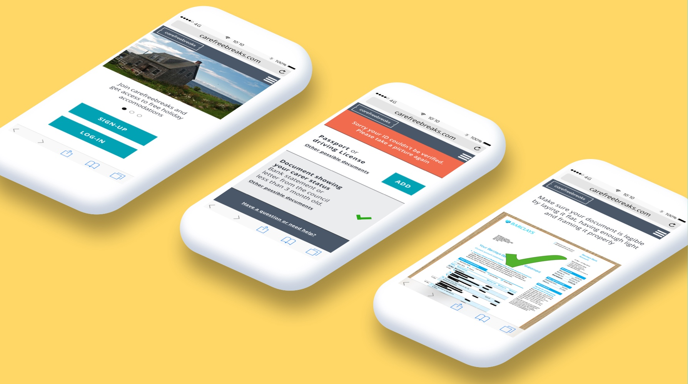

Carefreebreaks
Client Project- General Assembly - 2018
The Brief
Carefreebreaks is a non-profit social enterprise that provides free holiday accommodation for unpaid carers. Carefreebreaks asked us to consider integrating YOTI, a digital identification tool, into their existing website. I worked on this project with two other UX Designers for two and a half weeks.
The Problem
Carefreebreaks relies on carer support organisations to refer carers for a holiday; the carer support organisations conduct a carer assessment, and give the contact details of those that meet the requirements for a free holiday. This process is very inefficient as carer support organisations often lack the resources and this requires a lot of manual work. This meant that not enough carers were getting the holiday they deserved. To streamline this referral process, our clients wanted to use YOTI as a solution. We analysed YOTI as requested from the brief, but found that the process was very long and stressful, especially for our users who do not have a lot of time for themselves.
The Solution
We decided to create our own self-referral onboarding process where the carers can refer themselves for a holiday directly on the platform, so that neither the carers nor Carefreebreaks had to rely on the carer support organisations. This process asked the carer to sign up, and upload two documents that would allow Carefreebreaks to confirm their carer status.
The users for this project had very specific needs and pain points. Since they were unpaid carers, they did not have a lot of time for themselves, and we needed to make sure that this self-referral process would not add to their existing stress.
The Result
Our clients were extremely happy with the project, especially the insights based on the research and the concrete evidence based on the prototype testing. This new self-referral onboarding process will help Carefreebreaks to grow their user base, and this will allow more unpaid carers to get the holiday that they deserve.